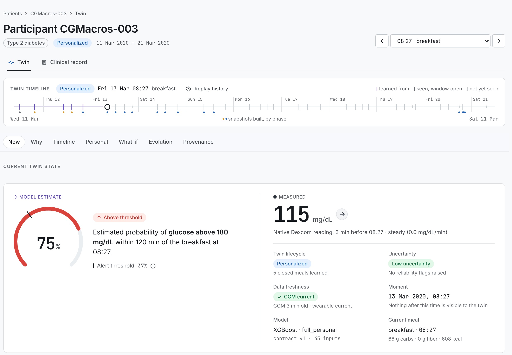
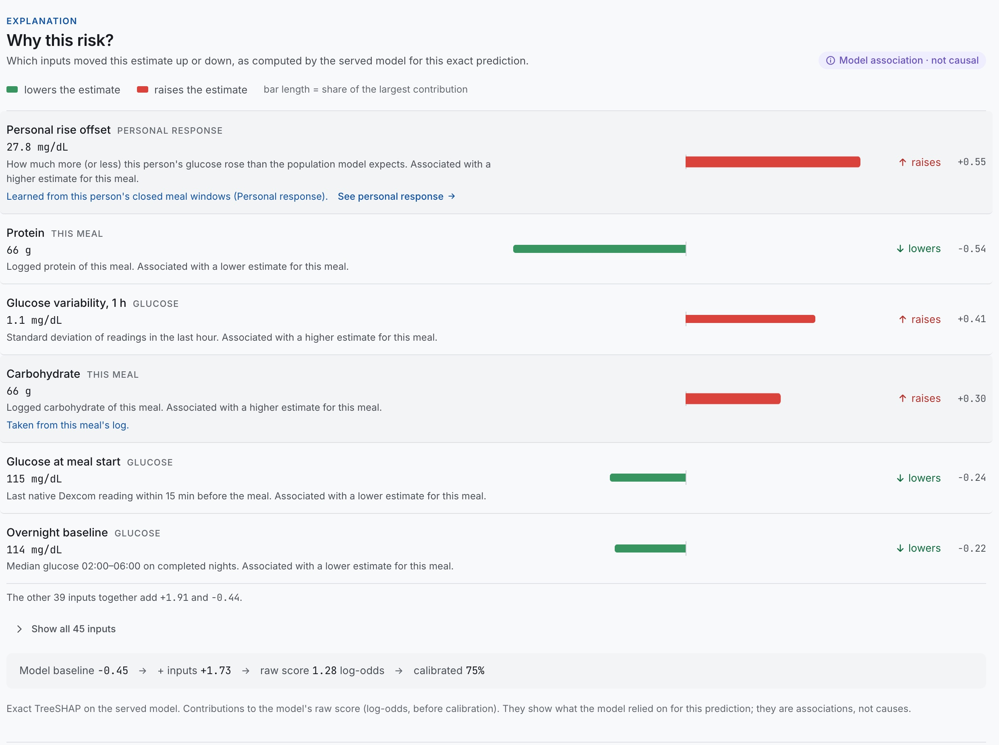
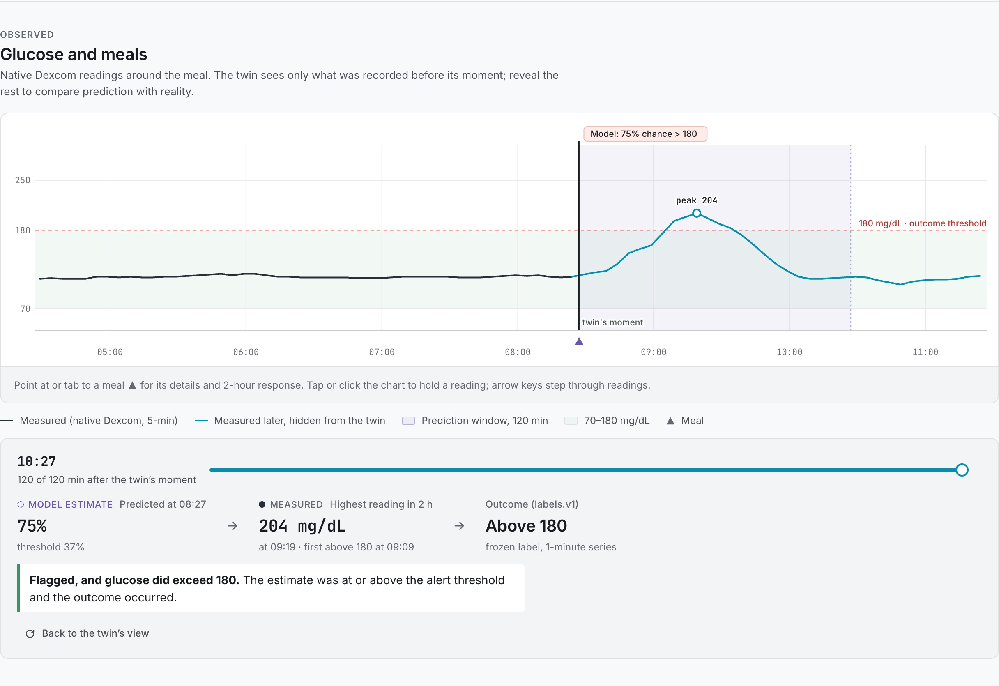
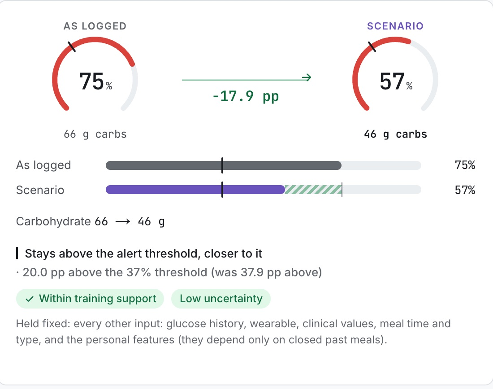
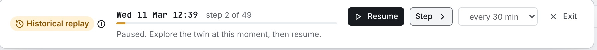
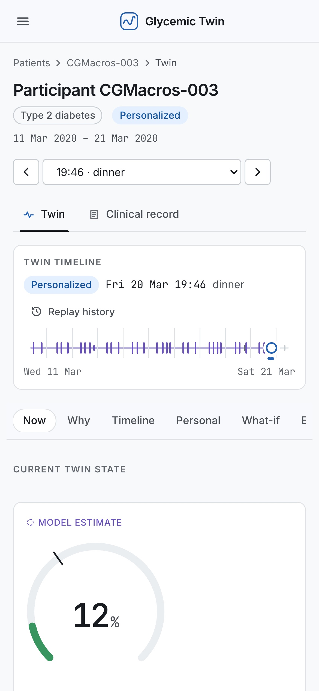

checksummed source, pinned manifest, never modified
cleaning rules v1; native CGM detected (minute values are interpolated)
> 180 mg/dL within 120 min of meal start; frozen before training
45 inputs, all known at meal start
L1–L6 automated; all passed
nested participant CV, calibration, SHAP, checksummed bundles
audited data, features, model bundle (SHA-256)
cut at as_of · same feature code as training · calibrated bundle
content-hashed, versioned, with provenance
PostgreSQL · auth · audit
clinician Patient Twin






temporal and external validation: later days, other CGM datasets
label sensitivity SA-1: native-only vs frozen labels
clinician usability: does the Twin help review, and is it understood?
hosted pilot; the Compose + Caddy stack is ready, governance first
a carefully scoped patient-facing view, post-hackathon